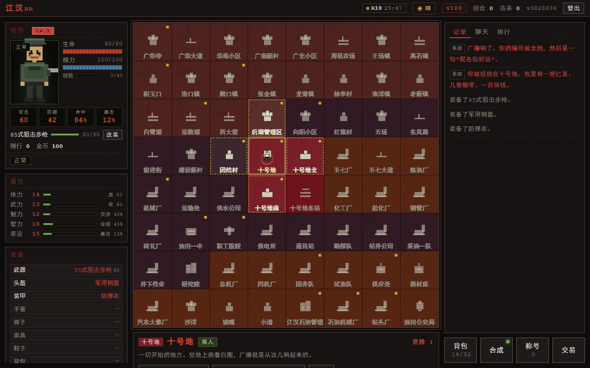
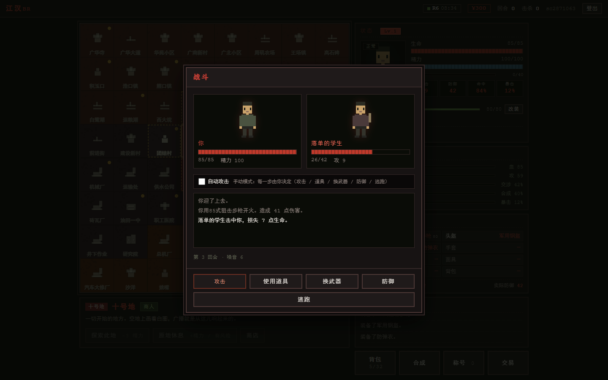
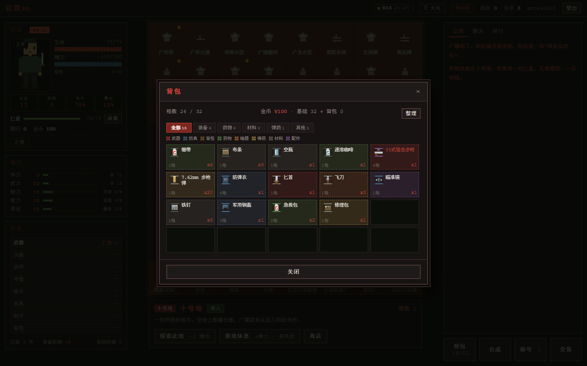
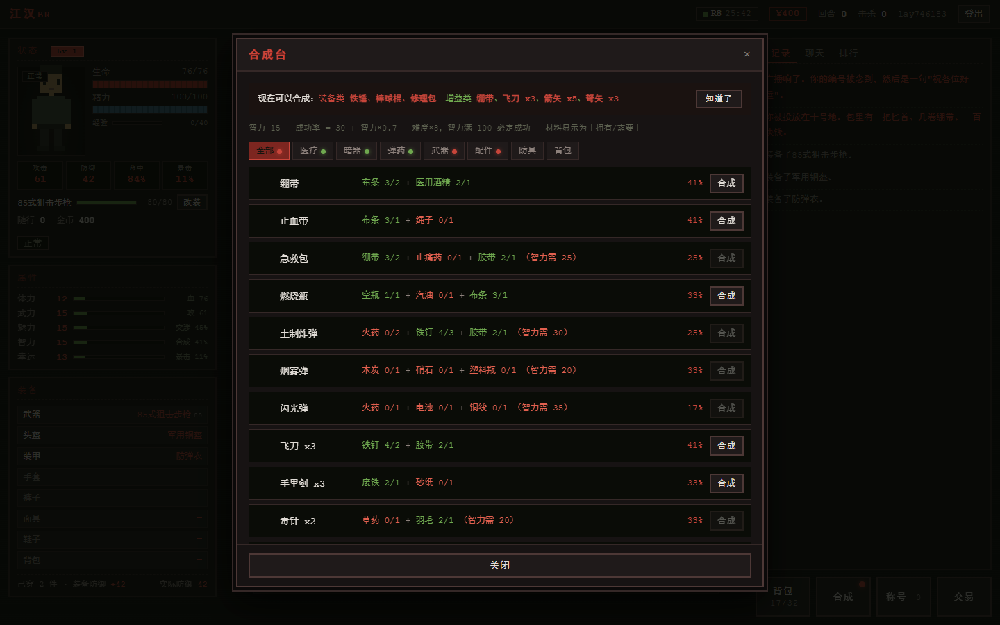
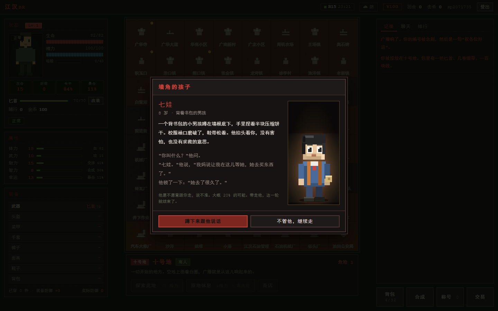
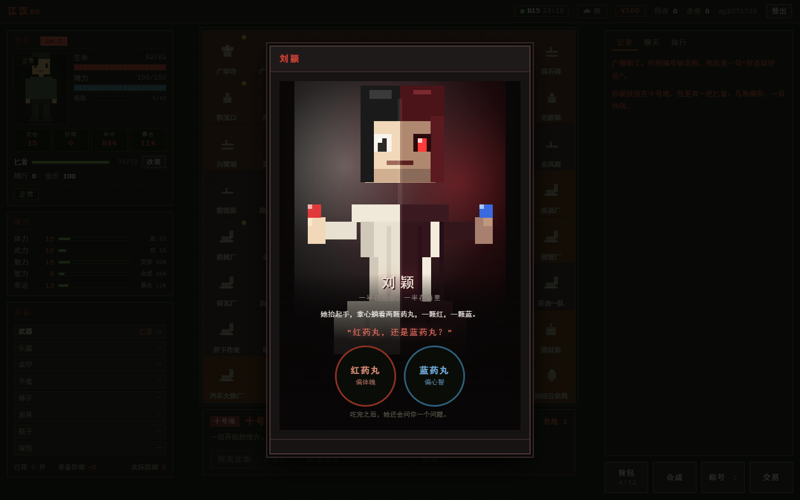

64 个区块，一个出口。
复刻《大逃杀》设定的网页多人生存游戏 · 舞台搬到了江汉油田
进 入 体 验 服开发中 · 随时可能重启 · 建议用电脑打开

广播念完你的编号，然后是一句「祝各位好运」。
你被投放在十号地。包里有一把匕首、几卷绷带、一百块钱。
一场被广播出来的生存游戏。你是第 37 号，被丢进 64 个区块里，只有一个人能走出去。
不是动作游戏，不用练枪法。你做的每一个决定都是选择题：往哪走、打不打、拿什么换什么。
一页搞定：登录、看板、称号图鉴、开局倒计时、玩法说明。不用翻页，也不用自己点刷新——每 3 秒自己更新。
胜 / 败 / 时间到 / 中止，四种判定直接标在轮次上。点开能看到这一轮的全部参赛者和起止时间。
按分类排好，解锁的亮着，没解锁的是暗的。点开还能看是谁拿到的。
开局时间直接摆在页面上，不用问人。规则也在这页，新来的不用先读说明书。
活到最后，或者别人都先出局。
★★★第 30 分钟后，上广华寺钟楼。
★★★★说服那个 8 岁男孩跟你走。
★
回合制。攻击、使用道具、换武器、防御、逃跑。打不过可以「放我一马」，魅力够高他真的会走。
打赢了能捡他掉的东西——这是拿到好枪的唯一途径，商人只卖基础物资。
枪声会招人。冷兵器噪音 1~3，几乎无声；枪械 8~10，全场都听得见。拿枪打赢一场，往往意味着要连打三场，而你的血不会回。

137 件物品：22 把武器、29 件防具、26 种药物、18 种材料、12 种弹药、5 种背包。
鼠标停在任何一件东西上都会弹出详细数值，并和你身上穿的做对比——绿色更好，红色更差。新手不用查表。

80 条配方，全是「小 → 大」的升级路线：绷带 → 止血带 → 急救包，匕首 → 棒球棍 → 铁锤 → 砍刀 → 长矛 → 消防斧 → … → 火箭筒。
材料只有 18 种，前中后期都有用，不会捡到一辈子用不上的垃圾。
黑市每 8 分钟随机换个区块开张，只待 8 分钟，地图上是个红点。所有东西三倍价——但这是全图唯一能买到高级枪的地方。
| 56式半自动步枪 | 660 |
| 95式自动步枪 | 780 |
| 95式班用机枪 | 900 |
| 双管猎枪 | 1 020 |
| 88式狙击步枪 | 1 260 |
| 40 火箭筒 | 2 100 |
佣兵头子常年蹲在西大垸，地图上是个蓝点。花 200 / 400 / 800 雇一个，只帮你打一场：你攻击时他补刀，敌人打你时他先挡，扛不住才轮到你。
身上同时只能带一个，想换得先打完。


「七娃。」他说，「我妈说让我在这儿等她，她去买东西了。」
他顿了一下：「她去了很久了。」
带走他，本轮立即结束，算你赢。失败他会换个地方，过一会儿还能再遇到。
刘颖会给你两颗药丸，红的动体魄，蓝的动心智，然后问你一道题。答对了多半是好事，答错了自己承担。
第 7 回合，你在楼道里第一次和人正面撞上，活了下来。
第 18 回合，动静太大，前后围上来两个。
最后，钟楼上那一关没过去。
不是流水账。只挑几件真正改变过局面的事：第一次动手、第一把枪、被围、最后倒在哪。
后台可以投放假人，最多 50 个。它们不是站着不动的装饰——走的是和真人完全相同的逻辑：探索、遭遇、打架、捡东西、升级、出局。
血少了吃药，精力空了休息，空手会先找武器。走位按「物资 × 2 + 危险」加权，血少的时候会主动躲开高危区。
还有空投补给、玩家交易、人质、地雷、宝箱、玩家对战——这些等你进去自己撞。
开发中。核心玩法已经跑通，正在调平衡和补内容。
✅ 单局流程、战斗、合成、装备、天气、NPC、称号、排名、黑市、佣兵
✅ 体验服已开：zzzbaba.fun:8123
🚧 剧情主线
源码暂不公开，这个页面只放说明和截图。